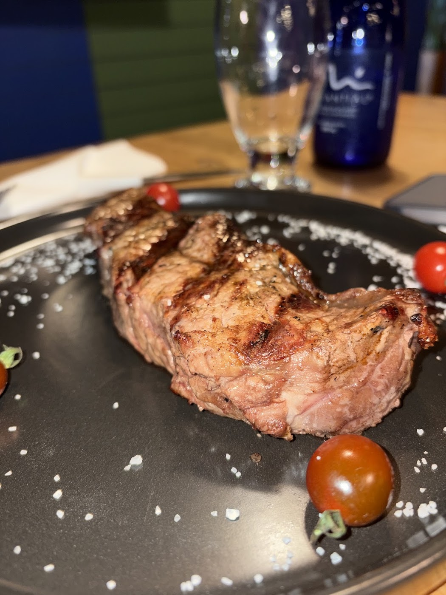
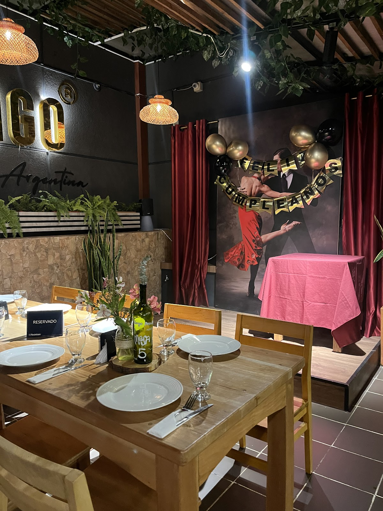
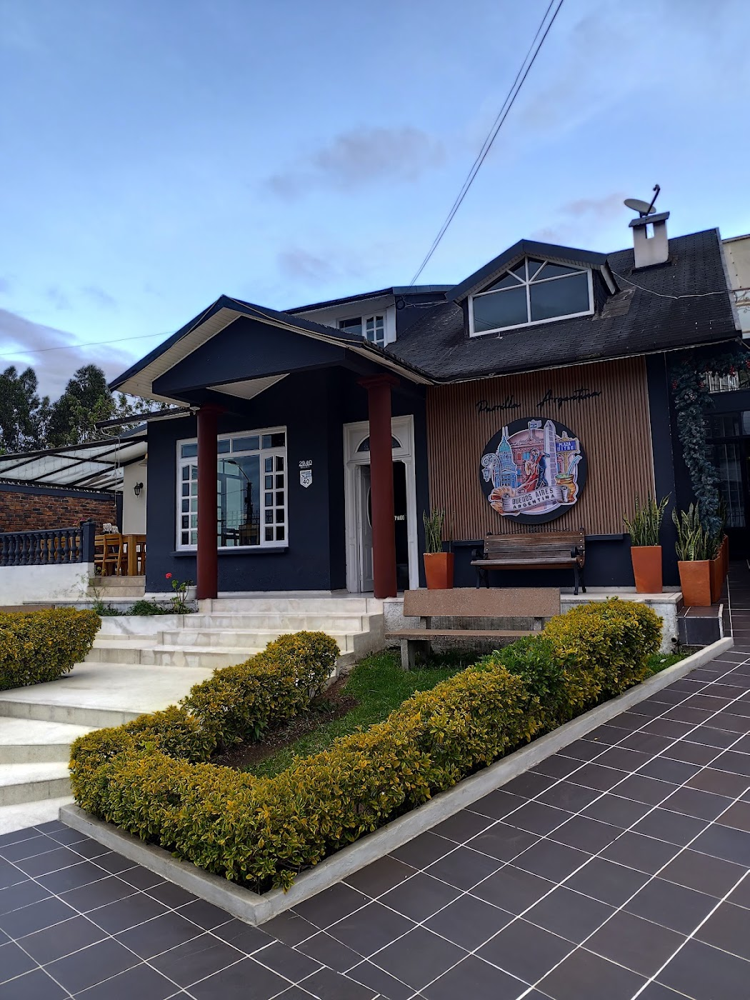
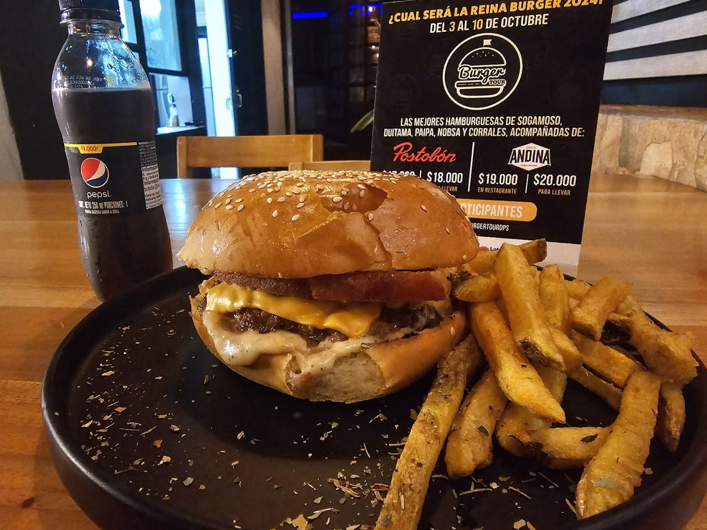
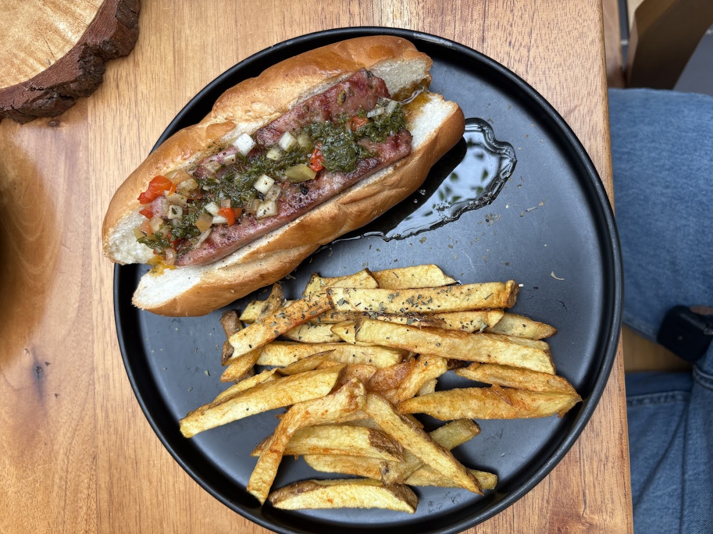

UN CLÁSICO ARGENTINO01Bife de chorizo
Bife de chorizo
con tomates
Un destacado para los amantes de los cortes de carne. Pregunta por sus acompañamientos.
Consultar precio y disponibilidad ↗
PARRILLA ARGENTINA · SOGAMOSO
Una buena mesa. Tu gente favorita.
El sabor de un encuentro en Tango.

EL SABOR ES LA EXCUSA. EL ENCUENTRO, EL PLAN.01 / NUESTRA ESENCIA
Hay planes que empiezan con un antojo y terminan en una buena conversación. En Tango Parrilla Argentina, la mesa es el punto de encuentro.
Encuéntranos en el barrio Recreo de Sogamoso y disfruta de una propuesta de parrilla argentina con amigos, en pareja o en familia.
Nos vemos en TangoLA BUENA COMPAÑÍA
SIEMPRE ES BIENVENIDA.
02 / LOS SABORES
Un vistazo a los platos destacados.
Consulta la carta del día y elige tu próximo favorito.

UN CLÁSICO ARGENTINOUn destacado para los amantes de los cortes de carne. Pregunta por sus acompañamientos.
Consultar precio y disponibilidad ↗
PARA CAMBIAR DE PLANOtro motivo para sentarse a la mesa. Conoce las opciones e ingredientes de la carta actual.
Consultar precio y disponibilidad ↗
MÁS PARA DESCUBRIRUn vistazo a otras preparaciones del restaurante. Pregunta por las opciones de la carta del día.
Consultar precio y disponibilidad ↗Una referencia para tu visita: $40.000–$80.000 COP por persona.Rango reportado por comensales en la ficha compartida de Google Maps. Los precios y la disponibilidad se confirman con el restaurante.
03 / NOS ENCONTRAMOS AQUÍ
En Sogamoso hay un lugar para ese plan que tienes pendiente.
Barrio Recreo · Sogamoso, Boyacá
LAS EXPERIENCIAS TAMBIÉN SE COMPARTEN
04 / HAGAMOS UN PLAN
¿Una visita con amigos, un almuerzo en familia o un antojo para llevar? Cuéntanos tu plan y consulta directamente con el restaurante.
312 514 8470También puedes llamarnos para consultar la carta,
los horarios y la disponibilidad.